TCP/IP 网络模型
**发送方（不停地穿衣/套娃）
- Chrome (应用层) 产生数据（比如 “GET /index.html”）。它只管内容，不知道怎么发。把数据直接丢给下一层 。
- 此时手里拿的是：Data (数据)
- 操作系统 (TCP层) 收到 Data。它不管数据是网页还是邮件，它只负责**“端口到端口”。给数据加一个 TCP 头（贴上源端口、目的端口）
- 此时手里拿的是：Segment (段) 。
- 操作系统 (IP层) 收到 Segment。它不管里面是 TCP 还是 UDP，它只负责“主机到主机”。给 Segment 加一个 IP 头**（贴上源IP、目的IP）。
- 此时手里拿的是：Packet (包) 。
- 网卡 (链路层) 收到 Packet。它不管你要发到美国还是北京，它只负责**“发给网线那头的下一站”。给 Packet 加一个 MAC 头（源MAC、目的MAC）再加一个 FCS 尾（用于以后检查数据坏没坏）
- 此时手里拿的是：Frame (帧)
接收方（不停地剥皮）：
- 网卡收到 Frame，检查帧尾 FCS。没问题？把头和尾扔掉，取出中间的 Packet 给 IP 层。
- 操作系统(IP层) 收到 Packet，检查 IP 地址。是给我的？把 IP 头扔掉，取出中间的 Segment 给 TCP 层。
- 操作系统(TCP层) 收到 Segment，检查端口。是给 Chrome 的？把 TCP 头扔掉，把纯数据给 Chrome。
重点： 每一层只看自己的头，根本不看（也不懂） 里面包着什么。链路层看到 IP 头时，它只觉得那是“数据”的一部分。
核心概念: 封装与解封装.
应用层数据被 TCP 装进箱子（Segment)
TCP 箱子被 IP 装进集装箱（Packet）
IP 集装箱被网卡装进货车（Frame）
每一层只读自己那一层的“快递单”（ Header）根本不看里面的内容
-
应用层
- message报文. 核心任务是具体的业务逻辑.
- 专注于为用户提供应用功能，比如 HTTP、FTP、Telnet、DNS、SMTP等
- 当两个不同设备的应用需要通信的时候，应用就把应用数据传给下一层
- 应用层是工作在操作系统中的用户态，传输层及以下则工作在内核态
-
传输层
- 关心segment 段.进程到进程(端口),比如chrome到对方服务器的nginx
- 只有这一层在真正负责数据不丢不乱.ip只管发,丢了不管,如果ip把包弄丢了 tcp负责重传.
-
网络层
- 关心packet,包/分组.端到端(实际的设备间传输的功能)
- 核心任务是路由和寻址(ip地址).ip协议负责把数据包从一个网段跳到另一个网段
- ip地址计算\路由算法\ip协议
- ip地址: 网络号标识子网.主机号负责标识同一个子网下的不同主机
- ip地址和子网掩码进行按位与就可以得到网络号.
-
数据链路层(交换机通过自学习知道哪个mac地址在哪个口)
- 关心frame 帧。相邻节点之间（交换机拿到frame,会根据mac头进行转发.)(网卡只认识mac地址)(路由器收到frame,就拆开给网络层看ip确认,然后重新组装一个frame加上新的mac地址,给二层去发送)
- 核心任务是在直接相连的两个设备之间，保证数据可以送过去，别撞车。
- 这里的纠错就是负责这段路上不出错（CRC校验、海明码之类的）
- 防撞车： CSMA\CD检测
-
数据链路层的交换机搞不定（因为它只认识局域网内的 MAC）它只能把包交给网络层的路由器(处理不同子网)
注意路由器里面也是会经历：
物理层 -> 链路层 -> 网络层 (处理/决策) -> 链路层 -> 物理层这么一个过程. 交换机是处理到链路层,不到达网络层
- 物理层
- 只关心bit。
- 核心任务是怎么把01变成电信号发送出去。眼里没有包，只有电流
键入网址到网页显示，期间发生了什么
应用层 HTTP
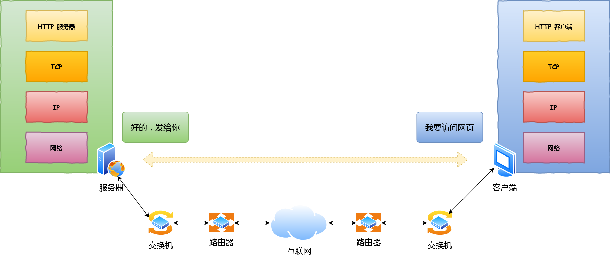
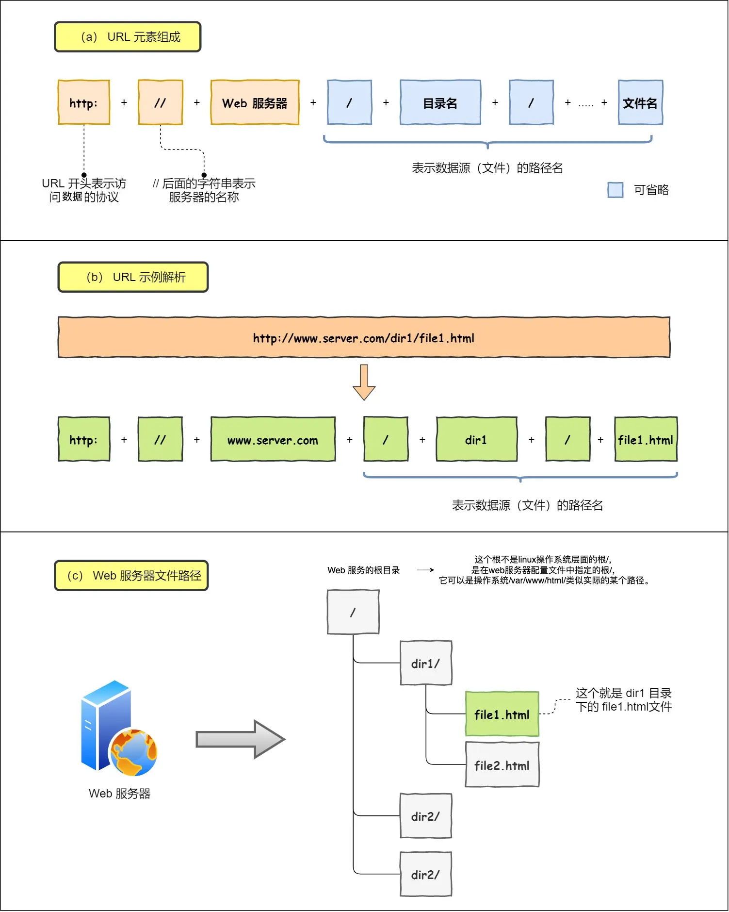
- URL解析
所以图中的长长的 URL 实际上是请求服务器里的文件资源。
当没有路径名的时候,就访问根目录下事先设置的默认文件.
对URL进行解析之后，浏览器确定了 Web 服务器和文件名，接下来就是根据这些信息来生成 HTTP 请求消息了。 - 生成HTTP请求信息
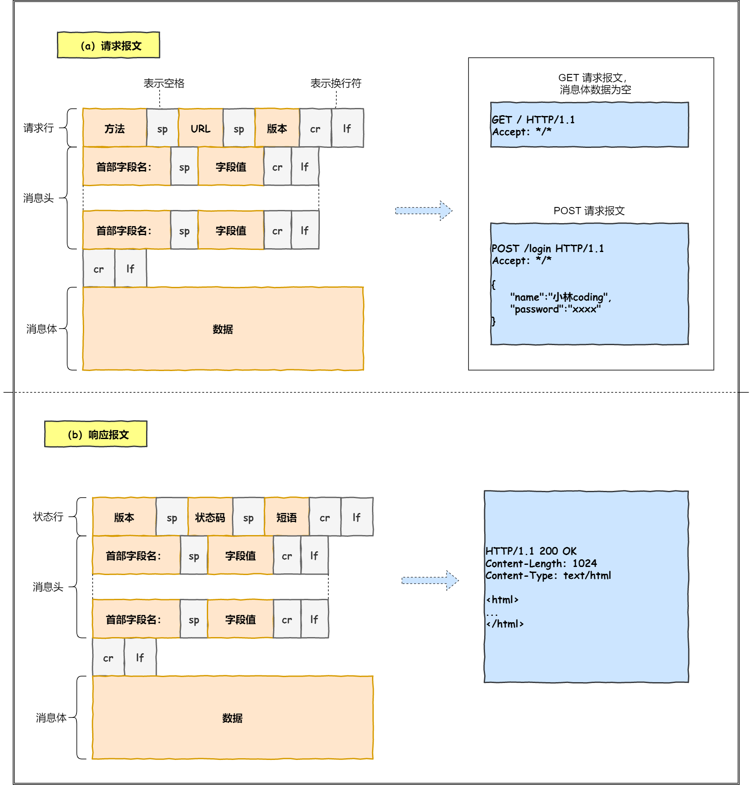
真实地址查询—DNS
-
通过浏览器解析URL并生成HTTP消息后,需要委托操作系统将消息发送给Web服务器.在这之前,需要查询服务器域名对应的IP地址.
-
DNS服务器就专门保存了Web服务器域名与IP的对应关系
-
DNS 中的域名都是用句点来分隔的，比如
www.server.com，这里的句点代表了不同层次之间的界限。 -
在域名中，越靠右的位置表示其层级越高。
-
实际上域名最后还有一个点，比如
www.server.com.，这个最后的一个点代表根域名。 -
也就是，
.根域是在最顶层，它的下一层就是.com顶级域，再下面是server.com。

根域的 DNS 服务器信息保存在互联网中所有的 DNS 服务器中。这样一来，任何 DNS 服务器就都可以找到并访问根域 DNS 服务器了。因此，客户端只要能够找到任意一台 DNS 服务器，就可以通过它找到根域 DNS 服务器，然后再一路顺藤摸瓜找到位于下层的某台目标 DNS 服务器。
域名解析的工作流程
- 客户端首先会发出一个 DNS 请求，问 www.server.com 的 IP 是啥，并发给本地 DNS 服务器（也就是客户端的 TCP/IP 设置中填写的 DNS 服务器地址）
- 本地域名服务器收到客户端的请求后，如果缓存里的表格能找到 www.server.com，则它直接返回 IP 地址。如果没有，本地 DNS 会去问它的根域名服务器：“老大， 能告诉我 www.server.com 的 IP 地址吗？” 根域名服务器是最高层次的，它不直接用于域名解析，但能指明一条道路。
- 根 DNS 收到来自本地 DNS 的请求后，发现后置是 .com，说：“www.server.com 这个域名归 .com 区域管理”，我给你 .com 顶级域名服务器地址给你，你去问问它吧。”
- 本地 DNS 收到顶级域名服务器的地址后，发起请求问“老二， 你能告诉我 www.server.com 的 IP 地址吗？”
- 顶级域名服务器说：“我给你负责 www.server.com 区域的权威 DNS 服务器的地址，你去问它应该能问到”。
- 本地 DNS 于是转向问权威 DNS 服务器：“老三，www.server.com对应的IP是啥呀？” server.com 的权威 DNS 服务器，它是域名解析结果的原出处。为啥叫权威呢？就是我的域名我做主。
- 权威 DNS 服务器查询后将对应的 IP 地址 X.X.X.X 告诉本地 DNS。
- 本地 DNS 再将 IP 地址返回客户端，客户端和目标建立连接。
浏览器会先看自身有没有对这个域名的缓存，如果有，就直接返回，如果没有，就去问操作系统，操作系统也会去看自己的缓存，如果有，就直接返回，如果没有，再去 hosts 文件看，也没有，才会去问「本地 DNS 服务器」
协议栈
获取到IP之后, 将HTTP的传输工作交给操作系统中的协议栈
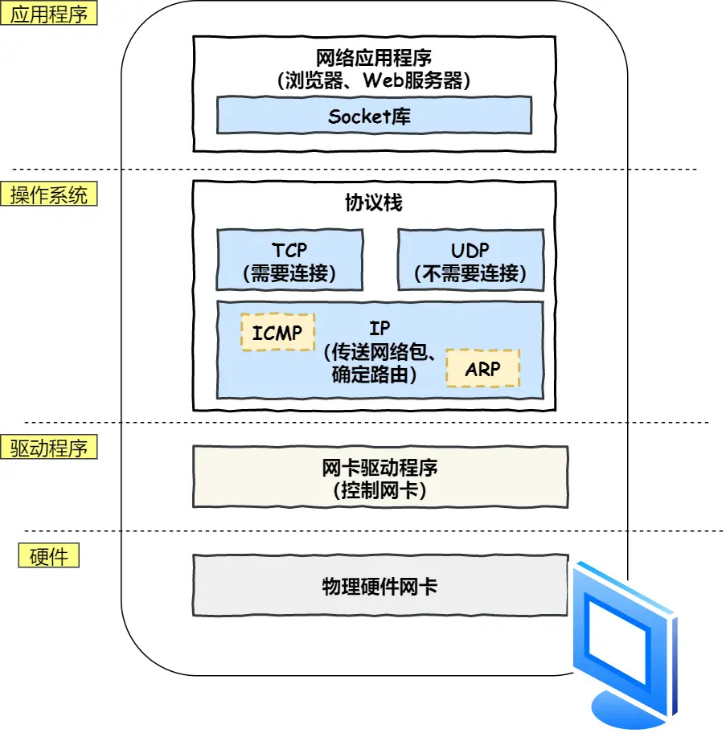
应用程序（浏览器）通过调用 Socket 库，来委托协议栈工作。
- 协议栈的上半部分有两块，分别是负责收发数据的 TCP 和 UDP 协议，这两个传输协议会接受应用层的委托执行收发数据的操作。
- 协议栈的下面一半是用 IP 协议控制网络包收发操作，在互联网上传数据时，数据会被切分成一块块的网络包，而将网络包发送给对方的操作就是由 IP 负责的。
ARP用于根据 IP 地址查询相应的以太网 MAC 地址。要么是[ 以太网头 | IP 头 | TCP 头/udp/icmp| 数据 ] 要么是[ 以太网头 (Type=0806) | ARP 头 | 数据 ] 就是说arp和ip是平级的
因为arp就是因为只知道ip不知道mac 所以需要问.所以绕过ip层作为以太网负载发出去,问某个ip对应的mac
- IP 下面的网卡驱动程序负责控制网卡硬件，而最下面的网卡则负责完成实际的收发操作，也就是对网线中的信号执行发送和接收操作。就是主要负责数据链路层和物理层
可靠传输TCP
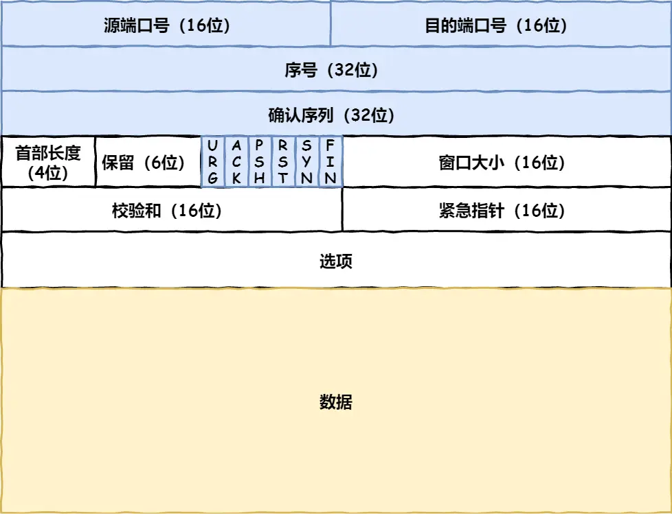
TCP建立连接:三次握手
所谓的「连接」，只是双方计算机里维护一个状态机，在连接建立的过程中，双方的状态变化时序图就像这样。
- 一开始，客户端和服务端都处于
CLOSED状态。先是服务端主动监听某个端口，处于LISTEN状态。 - 然后客户端主动发起连接
SYN，之后处于SYN-SENT状态。 - 服务端收到发起的连接，返回
SYN，并且ACK客户端的SYN，之后处于SYN-RCVD状态。 - 客户端收到服务端发送的
SYN和ACK之后，发送对SYN确认的ACK，之后处于ESTABLISHED状态，因为它一发一收成功了。 - 服务端收到
ACK的ACK之后，处于ESTABLISHED状态，因为它也一发一收了。 - 所以三次握手目的是保证双方都有发送和接收的能力。
查看TCP的连接状态，在linux可以用netstat -napt命令查看
如果 HTTP 请求消息比较长，超过了 MSS 的长度，这时 TCP 就需要把 HTTP 的数据拆解成一块块的数据发送，而不是一次性发送所有数据。

-
MTU：一个网络包的最大长度，以太网中一般为1500字节。 -
MSS：除去 IP 和 TCP 头部之后，一个网络包所能容纳的 TCP 数据的最大长度。 -
TCP 协议里面会有两个端口，一个是浏览器监听的端口（通常是随机生成的），一个是 Web 服务器监听的端口（HTTP 默认端口号是
80， HTTPS 默认端口号是443）。
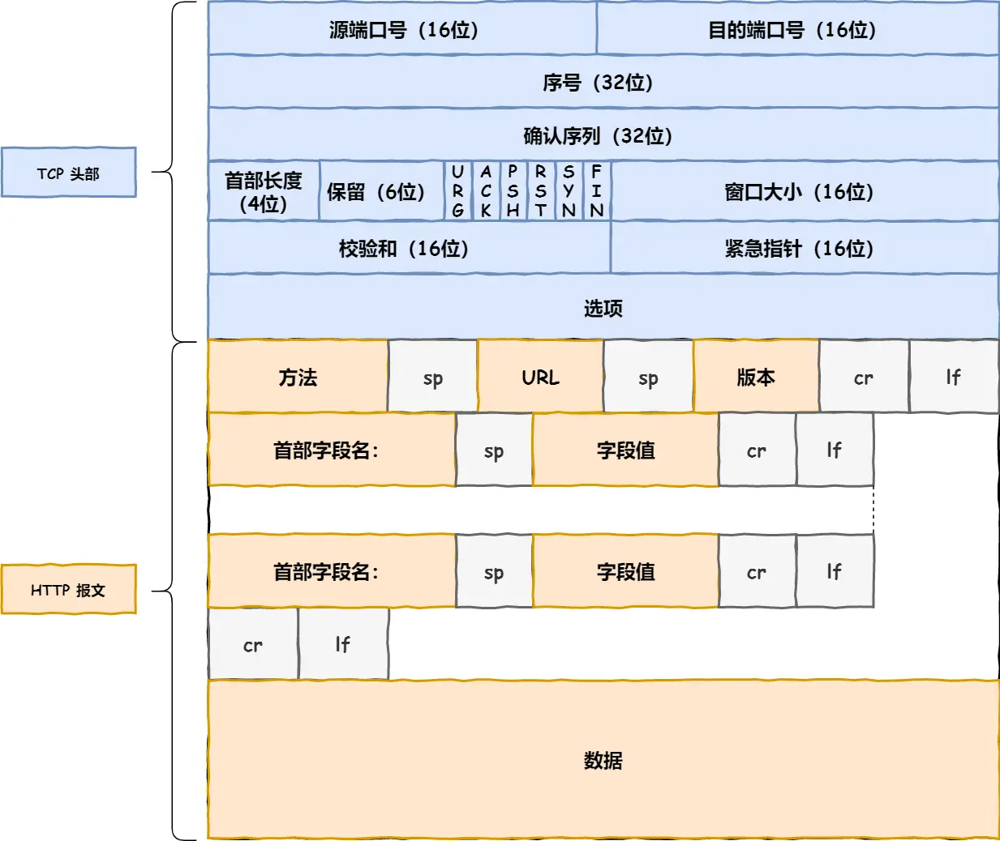
经过网络层和传输层之后就是这个样子了
ip将数据封装成网络包：网络层
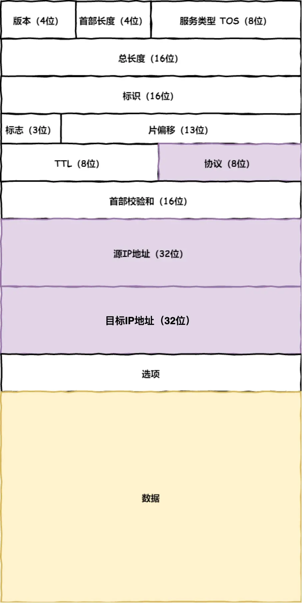
- 源地址IP，即是客户端输出的 IP 地址；
- 目标地址，即通过 DNS 域名解析得到的 Web 服务器 IP。
- 因为 HTTP 是经过 TCP 传输的，所以在 IP 包头的协议号，要填写为
06（十六进制），表示协议为 TCP。这样才知道拆开之后的文件属于tcp- TCP:
[ IP 头 | TCP 头 | 数据 ] - UDP:
[ IP 头 | UDP 头 | 数据 ] - ICMP:
[ IP 头 | ICMP 头 | 数据 ]但是实际上 icmp属于网络层,tcp/udp属于传输层 icmp就是报错,是由中间的路由器发回给源主机的,不需要什么端口什么的,但是因为是路由器发的,所以被封装进一个ip包.而且发icmp一般都是tcp连接断掉了,那如果还用tcp发那肯定不行的.
网络层协议: icmp/ip/arp 但是imcp一般是包裹在ip头里面的.arp头则是替代ip头
- TCP:
当存在多个网卡的时候,就需要判断应该写哪个作为源ip地址,就是决定应该用哪个网卡来发送包.这时候就需要根据路由表规则来判断.
在 Linux 操作系统，我们可以使用route -n命令查看当前系统的路由表。
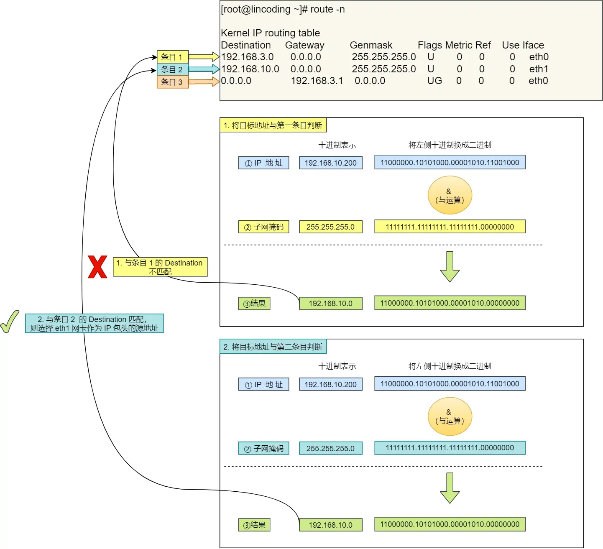
第三条目比较特殊，它目标地址和子网掩码都是0.0.0.0，这表示默认网关，如果其他所有条目都无法匹配，就会自动匹配这一行。并且后续就把包发给路由器，Gateway即是路由器的 IP 地址。
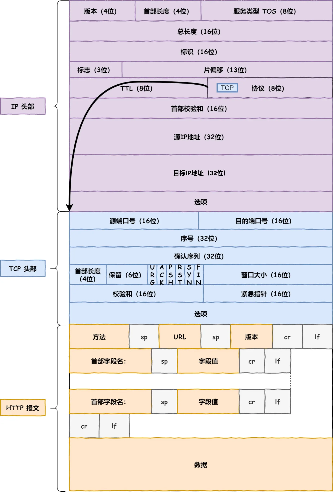
mac
实际上是由操作系统CPU来填写的
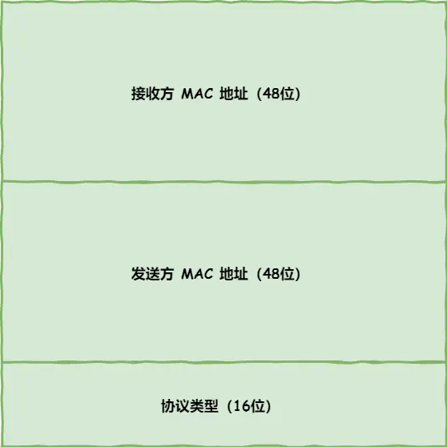
一般在 TCP/IP 通信里，MAC 包头的协议类型只使用：
0800： IP 协议0806： ARP 协议
//这就是网络层协议
发送方的 MAC 地址获取比较简单，MAC 地址是在网卡生产时写入到 ROM 里的，只要将这个值读取出来写入到 MAC 头部就可以了。
接收方的 MAC 地址就有点复杂了，
得先搞清楚应该把包发给谁，需要查一下路由表。
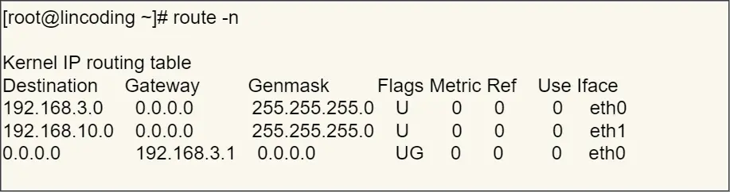
- 如果在一个局域网,那么直接发到ip就可以了
- 如果不在就会匹配到最后一个条目 发送到默认网关做转发.
知道发送给谁之后,要如何获取对方的mac地址呢?此时就需要 ARP 协议帮我们找到路由器的 MAC 地址。
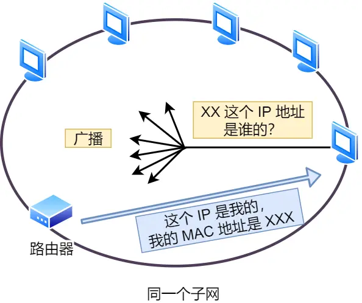
ARP 协议会在以太网中以广播的形式，对以太网所有的设备喊出：“这个 IP 地址是谁的？请把你的 MAC 地址告诉我”。
然后就会有人回答：“这个 IP 地址是我的，我的 MAC 地址是 XXXX”。
如果对方和自己处于同一个子网中，那么通过上面的操作就可以得到对方的 MAC 地址。然后，我们将这个 MAC 地址写入 MAC 头部，MAC 头部就完成了。
在后续操作系统会把本次查询结果放到一块叫做 ARP 缓存的内存空间留着以后用，不过缓存的时间就几分钟。
也就是说，在发包时：
- 先查询 ARP 缓存，如果其中已经保存了对方的 MAC 地址，就不需要发送 ARP 查询，直接使用 ARP 缓存中的地址。
- 而当 ARP 缓存中不存在对方 MAC 地址时，则发送 ARP 广播查询。
- 在 Linux 系统中，我们可以使用
arp -a命令来查看 ARP 缓存的内容。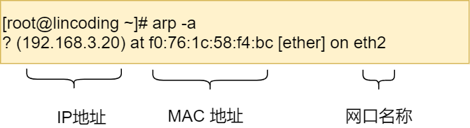
最终生成的报文长这个样子
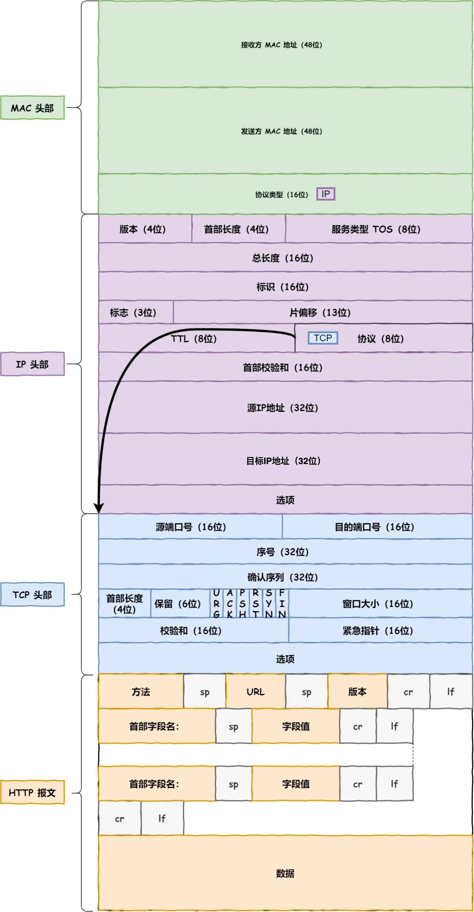
网卡
网络包只是存放在内存中的一串二进制数字信息，没有办法直接发送给对方。因此，我们需要将数字信息转换为电信号，才能在网线上传输，也就是说，这才是真正的数据发送过程。
负责执行这一操作的是网卡，要控制网卡还需要靠网卡驱动程序。
网卡驱动获取网络包之后，会将其复制到网卡内的缓存区中，接着会在其开头加上报头和起始帧分界符，在末尾加上用于检测错误的帧校验序列。
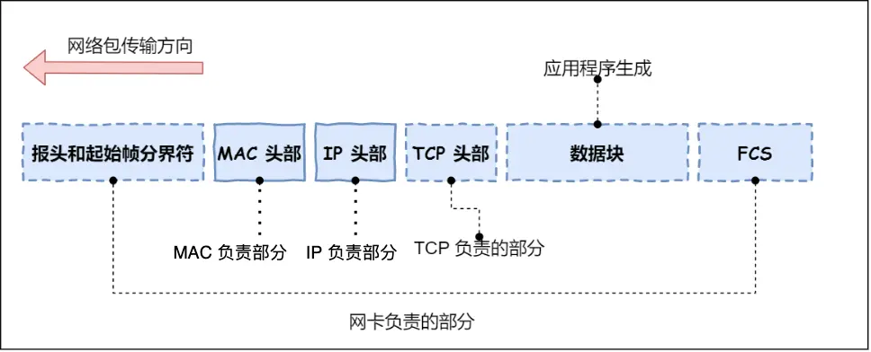
- 起始帧分界符是一个用来表示包起始位置的标记
- 末尾的
FCS（帧校验序列）用来检查包传输过程是否有损坏
最后网卡会将包转为电信号，通过网线发送出去。
交换机
交换机的设计是将网络包原样转发到目的地。交换机工作在 MAC 层，也称为二层网络设备。
mac层:（介质访问控制层）是数据链路层的一个“子层”。
包接收
首先，电信号到达网线接口，交换机里的模块进行接收，接下来交换机里的模块将电信号转换为数字信号。
然后通过包末尾的 FCS 校验错误，如果没问题则放到缓冲区。这部分操作基本和计算机的网卡相同，但交换机的工作方式和网卡不同。
计算机的网卡本身具有 MAC 地址，并通过核对收到的包的接收方 MAC 地址判断是不是发给自己的，如果不是发给自己的则丢弃；相对地，交换机的端口不核对接收方 MAC 地址，而是直接接收所有的包并存放到缓冲区中。因此，和网卡不同，交换机的端口不具有 MAC 地址。
将包存入缓冲区后，接下来需要查询一下这个包的接收方 MAC 地址是否已经在 MAC 地址表中有记录了。
交换机的 MAC 地址表主要包含两个信息：
- 一个是设备的 MAC 地址，
- 另一个是该设备连接在交换机的哪个端口上。

举个例子，如果收到的包的接收方 MAC 地址为00-02-B3-1C-9C-F9，则与图中表中的第 3 行匹配，根据端口列的信息，可知这个地址位于3号端口上，然后就可以通过交换电路将包发送到相应的端口了。
所以，交换机根据 MAC 地址表查找 MAC 地址，然后将信号发送到相应的端口。
如果MAC地址表查找不到指定的MAC地址
只能将包转发到除了源端口之外的所有端口上，无论该设备连接在哪个端口上都能收到这个包。
这样做不会产生什么问题，因为以太网的设计本来就是将包发送到整个网络的，然后只有相应的接收者才接收包，而其他设备则会忽略这个包。
发送了包之后目标设备会作出响应，只要返回了响应包，交换机就可以将它的地址写入 MAC 地址表，下次也就不需要把包发到所有端口了。
此外，如果接收方 MAC 地址是一个广播地址，那么交换机会将包发送到除源端口之外的所有端口。
以下两个属于广播地址：
- MAC 地址中的
FF:FF:FF:FF:FF:FF - IP 地址中的
255.255.255.255
路由器
网络包经过交换机之后，现在到达了路由器，并在此被转发到下一个路由器或目标设备。
这一步转发的工作原理和交换机类似，也是通过查表判断包转发的目标。
不过在具体的操作过程上，路由器和交换机是有区别的。
- 因为路由器是基于 IP 设计的，俗称三层网络设备，路由器的各个端口都具有 MAC 地址和 IP 地址；
- 而交换机是基于以太网设计的，俗称二层网络设备，交换机的端口不具有 MAC 地址。
基本原理
- 路由器的端口具有 MAC 地址，因此它就能够成为以太网的发送方和接收方；同时还具有 IP 地址，从这个意义上来说，它和计算机的网卡是一样的。
- 当转发包时，首先路由器端口会接收发给自己的以太网包，然后路由表查询转发目标，再由相应的端口作为发送方将以太网包发送出去。
包接收
- 首先，电信号到达网线接口部分，路由器中的模块会将电信号转成数字信号，然后通过包末尾的
FCS进行错误校验。 - 如果没问题则检查 MAC 头部中的接收方 MAC 地址，看看是不是发给自己的包，如果是就放到接收缓冲区中，否则就丢弃这个包。
- 总的来说，路由器的端口都具有 MAC 地址，只接收与自身地址匹配的包，遇到不匹配的包则直接丢弃
查路由表
- 完成包接收操作之后，路由器就会去掉包开头的 MAC 头部。
- MAC 头部的作用就是将包送达路由器，其中的接收方 MAC 地址就是路由器端口的 MAC 地址。因此，当包到达路由器之后，MAC 头部的任务就完成了，于是 MAC 头部就会被丢弃。
- 接下来，路由器会根据 MAC 头部后方的
IP头部中的内容进行包的转发操作。 - 转发操作分为几个阶段
- 首先是查询路由表判断转发目标。
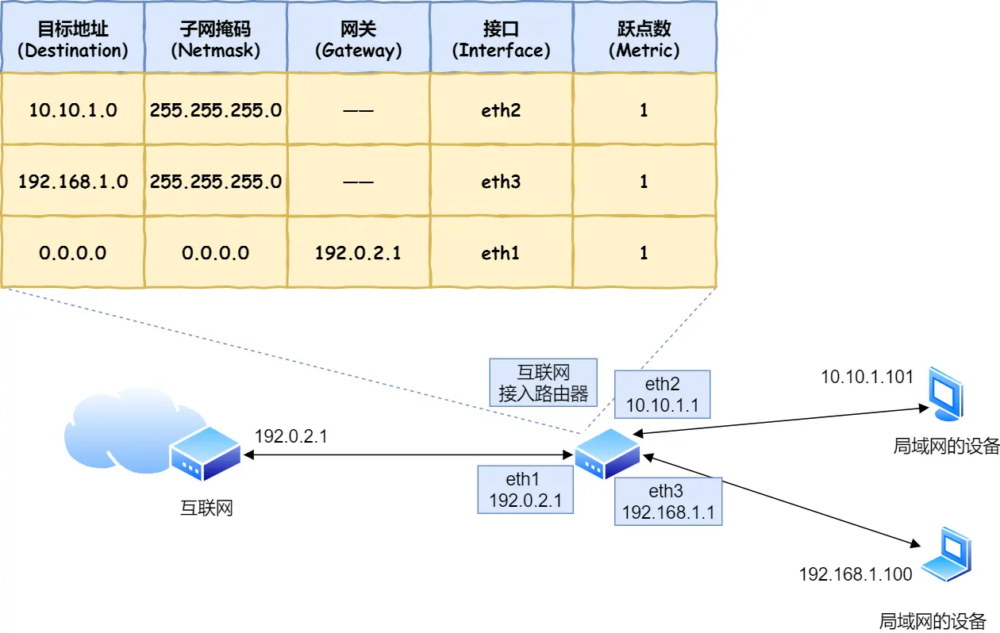 - 进入包的发送工作
首先需要根据路由表的网关列判断对方的地址
根据路由表的网关列判断对方的地址
- 如果网关是一个 IP 地址，则这个IP 地址就是我们要转发到的目标地址，还未抵达终点，还需继续需要路由器转发。
- 如果网关为空，则 IP 头部中的接收方 IP 地址就是要转发到的目标地址，也是就终于找到 IP 包头里的目标地址了，说明已抵达终点。
知道IP地址之后,就需要通过ARP协议根据IP地址来查询MAC地址,并将查询的结果作为接收方的MAC地址.
路由器也有ARP缓存,所以会先在ARP缓存中查询,如果找不到则发送ARP查询请求
- 发送方MAC地址就填写输出端口的MAC地址.还有一个以太类型字段填写IP协议
- 网络包完成之后就转换成电信号通过端口发送出去,然后通过交换机到达下一个路由器,经过层层路由转发,就可以到达最终的目的地.这之间,源ip地址和目标ip地址是不会发生变化的,一直变化的是MAC地址
服务器
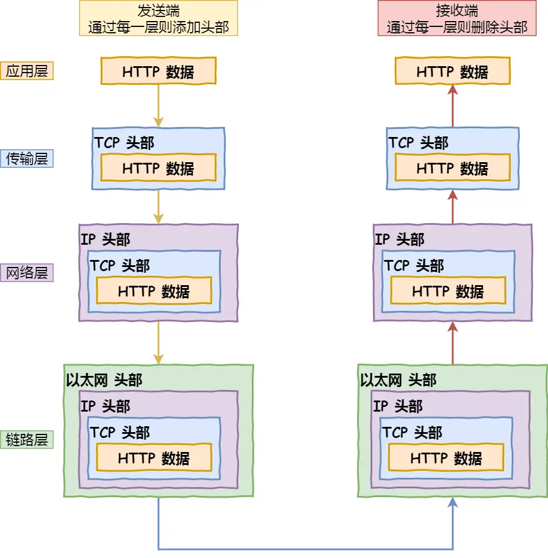
- 数据包抵达服务器后，服务器会先扒开数据包的 MAC 头部，查看是否和服务器自己的 MAC 地址符合，符合就将包收起来。
- 接着继续扒开数据包的 IP 头，发现 IP 地址符合，根据 IP 头中协议项，知道自己上层是 TCP 协议。
- 于是，扒开 TCP 的头，里面有序列号，需要看一看这个序列包是不是我想要的，如果是就放入缓存中然后返回一个 ACK，如果不是就丢弃。TCP头部里面还有端口号， HTTP 的服务器正在监听这个端口号。
- 于是，服务器自然就知道是 HTTP 进程想要这个包，于是就将包发给 HTTP 进程。
- 服务器的 HTTP 进程看到，原来这个请求是要访问一个页面，于是就把这个网页封装在 HTTP 响应报文里。
- HTTP 响应报文也需要穿上 TCP、IP、MAC 头部，不过这次是源地址是服务器 IP 地址，目的地址是客户端 IP 地址。
- 穿好头部衣服后，从网卡出去，交由交换机转发到出城的路由器，路由器就把响应数据包发到了下一个路由器，就这样跳啊跳。
- 最后跳到了客户端的城门把守的路由器，路由器扒开 IP 头部发现是要找城内的人，于是又把包发给了城内的交换机，再由交换机转发到客户端。
- 客户端收到了服务器的响应数据包后，同样也非常的高兴，客户能拆快递了！
- 于是，客户端开始扒皮，把收到的数据包的皮扒剩 HTTP 响应报文后，交给浏览器去渲染页面，一份特别的数据包快递，就这样显示出来了！
- 最后，客户端要离开了，向服务器发起了 TCP 四次挥手，至此双方的连接就断开了。